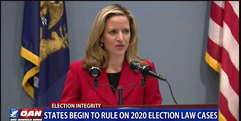

States begin to rule on 2020 election law cases
OAN Newsroom
Many states are now looking back at the irregularities of the 2020 election and many Americans are hoping big changes will be made soon.One America’s Jack Posobiec has more from Washington.
Posted On: 2021-03-20T00:00:00

Content Date: 2021-03-20
Download Date: 2021-04-16
Document ID: L0C049WLK